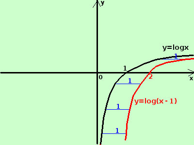

|
sviluppo y = log(x-1)  e' la funzione logaritmo a base naturale (di base il numero di Nepero e) il cui argomento e' diminuito di 1 diminuire di 1 l'argomento equivale a spostare la curva di una unita' nel verso delle x crescenti Importante: sottrarre una costante positiva all'argomento di una funzione equivale a spostarne il grafico verso destra di una quantita' pari alla costante |